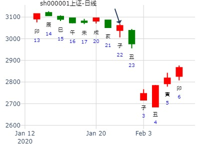
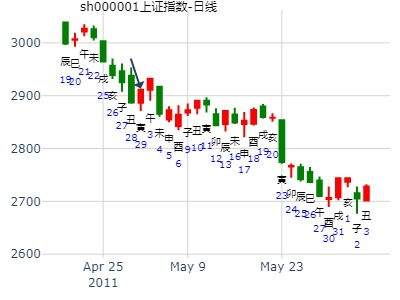
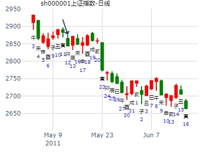

并且经历过的事情记下来，以便以后分析。
20110108是个星期六，我和爱人到天津去验收装修好的房子，这件事情计划了好长时间，九月份开始装修的房子，十月份就装修好了，就是没有时间去验收，年底做完了事情终于抽出时间来去看看，看看装修的结果如何？
早晨六点钟起来摇了一卦看看吉凶情况？
男 占事：问一下去天津办事的情况？
公历起卦时间：2011年1月8日6时6分 (手工指定)
干支：庚寅年 己丑月 癸亥日 乙卯时 （日空：子丑）
离宫：山水蒙 乾宫：山地剥
六神 伏神 本 卦 变 卦
白虎 父母丙寅木 ▅▅▅▅▅ 父母丙寅木 ▅▅▅▅▅
腾蛇 官鬼丙子水 ▅▅ ▅▅ 官鬼丙子水 ▅▅ ▅▅ 世
勾陈 妻财己酉金 子孙丙戌土 ▅▅ ▅▅ 世 子孙丙戌土 ▅▅ ▅▅
朱雀 兄弟戊午火 ▅▅ ▅▅ 父母乙卯木 ▅▅ ▅▅
青龙 子孙戊辰土 ▅▅▅▅▅ ○→ 兄弟乙巳火 ▅▅ ▅▅ 应
玄武 父母戊寅木 ▅▅ ▅▅ 应 子孙乙未土 ▅▅ ▅▅
戌土子孙持世，应爻为寅木，二爻辰土发动冲克世爻，妻财伏在世爻下面，腊月丑土当令，癸亥日分析：
1、世爻受丑土相助，亥水耗泄，估计没有什么大问题。
2、辰土冲克世爻，况且辰酉合，看来有破财的事情，财在暗处，被辰土合去。会是什么呢？
实际情况是，装修另外加了一些钱，这都是事先商量过，虽然多了一点，但也是事先商量好的，物业费一千多元，这也是事先通知了的，那会是什么事情，在不知情的事情被人合走了呢？
到房子那里一看才知道，热力公司在门上贴了催款通知书，如果不及时去交供热的钱，就要罚款了，供热的事情在九月份就和物业的打招呼了，今年不住，不要供热了，怎么会收供热费呢？经过和供热公司联系才知道，他们那里显示供热正常，没有办理停止供暖手续，也没有办法和他们理论，现在房间里还没有暖气，实际情况我们这里并没有用暖气，经过协商，我们把这50多天的暖气费交了，然后办理停止供暖，以后再供暖的时候，在提前通知，白白交了一千多块钱，看来六要真是神奇！
这个卦还可以这样认为：
1、子孙爻持世，为了孩子的事情。
2、辰戌相冲，伏在戌土下面的酉金露出来了，在巳时、午时受克，破财。
占事：2003年7月10日，因连日暴雨，有一楼住户问家中是否会因此进水，得蒙之剥。
干支：癸未年 己未月 甲申日；旬空：午未
离宫：山水蒙 乾宫：山地剥
玄武 ▄▄▄▄▄ 父母丙寅木 ▄▄▄▄▄ 父母丙寅木
白虎 ▄▄ ▄▄ 官鬼丙子水 ▄▄ ▄▄ 官鬼丙子水 世
螣蛇 妻财己酉金 ▄▄ ▄▄ 子孙丙戌土 世 ▄▄ ▄▄ 子孙丙戌土
勾陈 ▄▄ ▄▄ 兄弟戊午火 ▄▄ ▄▄ 父母乙卯木
朱雀 ▄▄▄▄▄ 子孙戊辰土 O-> ▄▄ ▄▄ 兄弟乙巳火 应
青龙 ▄▄ ▄▄ 父母戊寅木 应 ▄▄ ▄▄ 子孙乙未土
九二：包蒙吉；纳妇吉；子克家。象曰：子克家，刚柔接也。
断：蒙者山下有水，则艮山当为房子也，坎水动乎二爻者当指地上之水势渐涨，已近其宅也。辞曰包蒙吉者则主水势有制而被包，故不能继续上涨也。妇者六五之艮也，五为天道，当主雨将止之，纳妇吉者天从人愿，不再降雨矣。子克家者宅可安而无危也。且子孙旺动于宅爻故亦无碍也。
结果：酉日雨势渐小而后止，不久水退。家中也无搬迁之苦。
占事: 思源电气未来二周走势？
起卦方式：手动摇卦 周易天地www.64gua.com六爻线上排盘系统
时间: 2015-01-07
干支: 甲午年丁丑月癸未日 (旬空: 申酉 )
山水蒙 山地剥
六神 伏神 本 卦 变 卦
白虎 ▅▅▅▅▅ 父母寅木 ▅▅▅▅▅ 父母寅木
腾蛇 ▅▅ ▅▅ 官鬼子水 ▅▅ ▅▅ 官鬼子水 世
勾陈 妻财酉金▅▅ ▅▅ 子孙戌土 世 ▅▅ ▅▅ 子孙戌土
朱雀 ▅▅ ▅▅ 兄弟午火 ▅▅ ▅▅ 父母卯木
青龙 ▅▅▅▅▅ 子孙辰土 Ｏ→ ▅▅ ▅▅ 兄弟巳火 应
玄武 ▅▅ ▅▅ 父母寅木 应 ▅▅ ▅▅ 子孙未土
卯日冲旬空酉金，也能涨。起卦旬空还管用。
招财公主测002028未来2周走势
第1,2花
第2,3花
第3,2花
第4,2花
第5,2花
第6,1花
招财公主 2015-1-7 16:31:40
把结果告诉我再走
大道至简-陶朱公 2015-1-7 16:32:05
好
我要中文解释
大道至简-陶朱公 2015-1-7 16:37:40
周五涨停容易
16:39:44
招财公主 2015-1-7 16:39:44
就讲一点呀，讲2周吧
大道至简-陶朱公 2015-1-7 16:40:35
下周看不清
大道至简-陶朱公 2015-1-7 16:40:45
明天后天容易大涨
大道至简-陶朱公 2015-1-7 16:40:52
有一天容易大涨，或是涨停
大道至简-陶朱公 2015-1-7 16:40:59
具体哪天不敢说
16:43:22
大道至简-陶朱公 2015-1-7 16:43:22
下周二跌。然后周五也跌
招财公主 2015-1-7 16:44:12
那就以后找买点吧
安圆圆 占事：中兴通讯在今天的走势如何
公历起卦时间：2015年1月8日10时24分 (电脑自动)
干支：甲午年 丁丑月 甲申日 己巳时 （日空：午未）
离宫：山水蒙 乾宫：山地剥
六神 伏神 本 卦 变 卦
玄武 父母丙寅木 ▅▅▅▅▅ 父母丙寅木 ▅▅▅▅▅
白虎 官鬼丙子水 ▅▅ ▅▅ 官鬼丙子水 ▅▅ ▅▅ 世
腾蛇 妻财己酉金 子孙丙戌土 ▅▅ ▅▅ 世 子孙丙戌土 ▅▅ ▅▅
勾陈 兄弟戊午火 ▅▅ ▅▅ 父母乙卯木 ▅▅ ▅▅
朱雀 子孙戊辰土 ▅▅▅▅▅ ○→ 兄弟乙巳火 ▅▅ ▅▅ 应
青龙 父母戊寅木 ▅▅ ▅▅ 应 子孙乙未土 ▅▅ ▅▅
占事：002008大族激光本周行情
时间：2015年1月13日7点44分 星期二
干支：甲午年 丁丑月 己丑日 戊辰时
丑月 己丑日（旬空：午未）
六神 藏爻 山水蒙 离宫 山地剥 乾宫
勾陈 兄弟巳火■■■■■■父母寅木 父母寅木■■■■■■
朱雀 子孙未土■■ ■■官鬼子水 官鬼子水■■ ■■
青龙 妻财酉金■■ ■■子孙戌土 世 子孙戌土■■ ■■
玄武 官鬼亥水■■ ■■兄弟午火 父母卯木■■ ■■
白虎 子孙丑土■■■■■■子孙辰土 ○→ 兄弟巳火■■ ■■
腾蛇 父母卯木■■ ■■父母寅木 应 子孙未土■■ ■■
主帖标题: 2020年1月20日至23日深市指数
2020-01-22
干支：己亥年 丁丑月 甲子日 辛未时
主卦：山水蒙(离宫)二爻动。变卦：山地剥(乾宫)
离宫：山水蒙 乾宫：山地剥
六神 伏神 本 卦 变 卦
玄武 父母丙寅木 ▅▅▅▅▅ 父母丙寅木 ▅▅▅▅▅
白虎 官鬼丙子水 ▅▅ ▅▅ 官鬼丙子水 ▅▅ ▅▅ 世
腾蛇 妻财己酉金 子孙丙戌土 ▅▅ ▅▅ 世 子孙丙戌土 ▅▅ ▅▅
勾陈 兄弟戊午火 ▅▅ ▅▅ 父母乙卯木 ▅▅ ▅▅
朱雀 子孙戊辰土 ▅▅▅▅▅ ○→ 兄弟乙巳火 ▅▅ ▅▅ 应
青龙 父母戊寅木 ▅▅ ▅▅ 应 子孙乙未土 ▅▅ ▅▅

蒙之剥，子化兄，辰化巳，日照泉测2010年年卦。
排卦：六爻在线排盘系统 http://www.china95.net
公历起卦时间：2010年2月4日15时16分 (手工指定)
干支：庚寅年 戊寅月 乙酉日 甲申时 （日空：午未）
离宫：山水蒙 乾宫：山地剥
六神 伏神 本 卦 变 卦
玄武 父母丙寅木 ▅▅▅▅▅ 父母丙寅木 ▅▅▅▅▅
白虎 官鬼丙子水 ▅▅ ▅▅ 官鬼丙子水 ▅▅ ▅▅ 世
腾蛇 妻财己酉金 子孙丙戌土 ▅▅ ▅▅ 世 子孙丙戌土 ▅▅ ▅▅
勾陈 兄弟戊午火 ▅▅ ▅▅ 父母乙卯木 ▅▅ ▅▅
朱雀 子孙戊辰土 ▅▅▅▅▅ ○→ 兄弟乙巳火 ▅▅ ▅▅ 应
青龙 父母戊寅木 ▅▅ ▅▅ 应 子孙乙未土 ▅▅ ▅▅
九二：包蒙吉；纳妇吉；子克家。象曰：子克家，刚柔接也。
马后炮：
辰月开始化这空方。跌。（此处解释有误，应该是辰冲世爻戌土，又合走戌下财爻酉金，此卦解释并非所有的子动为喜）
辰巳相邻，先辰后已
08年3月19日周三大盘预测1、六爻公历
起卦时间：2008年3月19日9时39分 (按公历时间起卦)
干支：戊子年 乙卯月 戊午日 丁巳时 （日空：子丑）
山水蒙 山地剥
六神 伏神 本 卦 变 卦
朱雀 ▅▅▅▅▅ 父母寅木 ▅▅▅▅▅ 父母寅木
青龙 ▅▅ ▅▅ 官鬼子水 ▅▅ ▅▅ 官鬼子水 世
玄武 妻财酉金▅▅ ▅▅ 子孙戌土 世 ▅▅ ▅▅ 子孙戌土
白虎 ▅▅ ▅▅ 兄弟午火 ▅▅ ▅▅ 父母卯木
腾蛇 ▅▅▅▅▅ 子孙辰土 Ｏ→ ▅▅ ▅▅ 兄弟巳火 应
勾陈 ▅▅ ▅▅ 父母寅木 应 ▅▅ ▅▅ 子孙未土
主帖标题: 想今天买入一股，明天能得利不？
415今天买入明天能赚钱吗？
公历时间：2020年3月4日15时46分
干 支：庚子年 戊寅月 丙午日 丙申时
旬 空：辰巳 申酉 寅卯 辰巳
离宫：山水蒙 乾宫：山地剥
六神 伏 神 【本 卦】 【变 卦】
青龙 ▄▄▄▄▄ 父母丙寅木 ▄▄▄▄▄ 父母丙寅木
玄武 ▄▄ ▄▄ 官鬼丙子水 ▄▄ ▄▄ 官鬼丙子水 世
白虎 妻财己酉金 ▄▄ ▄▄ 子孙丙戌土 世 ▄▄ ▄▄ 子孙丙戌土
螣蛇 ▄▄ ▄▄ 兄弟戊午火 ▄▄ ▄▄ 父母乙卯木
勾陈 ▄▄▄▄▄ 子孙戊辰土 ○ ▄▄ ▄▄ 兄弟乙巳火 应
朱雀 ▄▄ ▄▄ 父母戊寅木 应 ▄▄ ▄▄ 子孙乙未土
公历时间：2020年3月4日15时47分 农历时间：庚子年 二月十一日申时
干 支：庚子年 戊寅月 丙午日 丙申时
旬 空：辰巳 申酉 寅卯 辰巳
神 煞：驿马─申 桃花─卯 日禄─巳 贵人─酉，亥
中国预测网纳甲六爻排盘
离宫：山水蒙 巽宫：山雷颐（游魂）
六神 伏 神 【本 卦】 【变 卦】
青龙 ▄▄▄▄▄ 父母丙寅木 ▄▄▄▄▄ 父母丙寅木
玄武 ▄▄ ▄▄ 官鬼丙子水 ▄▄ ▄▄ 官鬼丙子水
白虎 妻财己酉金 ▄▄ ▄▄ 子孙丙戌土 世 ▄▄ ▄▄ 子孙丙戌土 世
螣蛇 ▄▄ ▄▄ 兄弟戊午火 ▄▄ ▄▄ 子孙庚辰土
勾陈 ▄▄▄▄▄ 子孙戊辰土 ○ ▄▄ ▄▄ 父母庚寅木
朱雀 ▄▄ ▄▄ 父母戊寅木 应× ▄▄▄▄▄ 官鬼庚子水 应
赚了1.5点出来了。
主帖标题: 捍卫老祖宗感通卦尊严：测2020.3.16上证收盘走势？2赛01
测2020.3.16上证收盘十位数sbklmon galyh?
公历起卦时间：2020年3月16日12时51分 (电脑自动)
干支：庚子年 己卯月 戊午日 戊午时 （日空：子丑）
离宫：山水蒙 乾宫：山地剥
六神 伏神 本 卦 变 卦
朱雀 父母丙寅木 ▅▅▅▅▅ 父母丙寅木 ▅▅▅▅▅
青龙 官鬼丙子水 ▅▅ ▅▅ 官鬼丙子水 ▅▅ ▅▅ 世
玄武 妻财己酉金 子孙丙戌土 ▅▅ ▅▅ 世 子孙丙戌土 ▅▅ ▅▅
白虎 兄弟戊午火 ▅▅ ▅▅ 父母乙卯木 ▅▅ ▅▅
螣蛇 子孙戊辰土 ▅▅▅▅▅ ○→ 兄弟乙巳火 ▅▅ ▅▅ 应
勾陈 父母戊寅木 ▅▅ ▅▅ 应 子孙乙未土 ▅▅ ▅▅
姓名： 出生年:1981 性别：男 占事：600135下周趋势
起卦方式：时间起卦 易经股市论坛在线排盘系统
公历时间：2010年4月10日11时22分
干 支：庚寅年庚辰月庚寅日壬午时 旬 空：午未 申酉 (午未) 申酉
离宫：山水蒙 乾宫：山地剥
螣蛇 ▄▄▄▄▄ 父母丙寅木 ▄▄▄▄▄ 父母丙寅木
勾陈 ▄▄ ▄▄ 官鬼丙子水 ▄▄ ▄▄ 官鬼丙子水 世
朱雀 妻财己酉金 ▄▄ ▄▄ 子孙丙戌土 世 ▄▄ ▄▄ 子孙丙戌土
青龙 ▄▄ ▄▄ 兄弟戊午火 ▄▄ ▄▄ 父母乙卯木
玄武 ▄▄▄▄▄ 子孙戊辰土 O-> ▄▄ ▄▄ 兄弟乙巳火 应
白虎 ▄▄ ▄▄ 父母戊寅木 应 ▄▄ ▄▄ 子孙乙未土
九二：包蒙吉；纳妇吉；子克家。
象曰：子克家，刚柔接也。
本卦辰来冲世，辰月世破，虽然子化兄，结果难涨。
主帖标题: 2011年5月份（农历的巳月）沪市大盘运行趋势
占事：5月份（农历的巳月）大盘运行趋势
公历时间：2011年 4月29日 9时25分
干支： 辛卯年 壬辰月 甲寅日 己巳时 (旬空：子丑)
离宫：山水蒙 乾宫：山地剥
六神 伏 神 【本 卦】 【变 卦】
玄武 父母丙寅木 ━━━ 父母丙寅木 ━━━
白虎 官鬼丙子水 ━ ━ 官鬼丙子水 ━ ━ 世
螣蛇 妻财己酉金 子孙丙戌土 ━ ━ 世 子孙丙戌土 ━ ━
勾陈 兄弟戊午火 ━ ━ 父母乙卯木 ━ ━
朱雀 子孙戊辰土 ━━━ ○→ 兄弟乙巳火 ━ ━ 应
青龙 父母戊寅木 ━ ━ 应 子孙乙未土 ━ ━
此卦很明显的反映出正月二月大盘做了一次漂亮翻身
进入4月的辰月子孙是进入了绝地，股民遇到了暴跌，造成辰月绝望
进入5月也就是农历的四月（巳月）这个沪市大盘继续领跌全球
蒙卦就是股民对前途很迷惘，变卦是剥卦，说明最后大批股民的资财被剥夺了。
此卦仅供周易对未来大盘走势的预测研究，不作为股民操作参考！

马后炮：辰月辰爻冲破世爻，难涨。
求测人年龄:51 性别:男 预测策项:测下周上证涨跌。 策项时限:5月16日--20日
起卦钥语:无
起卦时间:2011年5月12日午时
癸巳月 丁卯日(戌亥空) 762卦
《山水蒙》 《山地剥》 六神
父寅、 寅、 龙
官子.. 子.. 玄
才酉：孙戌.. 离 戌.. 虎
兄午.. 卯.. 蛇
孙辰○ 巳.. 勾
父寅.. 应 未.. 雀
表述内容:财日破。不利行情。

测000603盛达资源在2020.5.11-2020.5.15走势
公历起卦时间：2020年5月10日11时21分 (手工指定)
干支：庚子年 辛巳月 癸丑日 戊午时 （日空：寅卯）
神煞：驿马－亥 桃花－午 日禄－子 贵人－卯，巳
离宫：山水蒙 乾宫：山地剥
六神 伏神 本 卦 变 卦
白虎 父母丙寅木 ▅▅▅▅▅ 父母丙寅木 ▅▅▅▅▅
螣蛇 官鬼丙子水 ▅▅ ▅▅ 官鬼丙子水 ▅▅ ▅▅ 世
勾陈 妻财己酉金 子孙丙戌土 ▅▅ ▅▅ 世 子孙丙戌土 ▅▅ ▅▅
朱雀 兄弟戊午火 ▅▅ ▅▅ 父母乙卯木 ▅▅ ▅▅
青龙 子孙戊辰土 ▅▅▅▅▅ ○→ 兄弟乙巳火 ▅▅ ▅▅ 应
玄武 父母戊寅木 ▅▅ ▅▅ 应 子孙乙未土 ▅▅ ▅▅
韩江一号占上证指数本周走势？得蒙之剥
日期：2010年6月6日
干支：庚寅年 壬午月 丁亥日 丁未时 旬空:【午未】 星期天 --手工指定
山水蒙【离宫】 山地剥【乾宫】
青龙 ▅▅▅▅▅ 父母丙寅木 ▅▅▅▅▅ 父母丙寅木
玄武 ▅▅ ▅▅ 官鬼丙子水 ▅▅ ▅▅ 官鬼丙子水 世
白虎 妻财己酉金 ▅▅ ▅▅ 子孙丙戌土 世 ▅▅ ▅▅ 子孙丙戌土
螣蛇 ▅▅ ▅▅ 兄弟戊午火 ▅▅ ▅▅ 父母乙卯木
勾陈 ▅▅▅▅▅ 子孙戊辰土 Ｏ→ ▅▅ ▅▅ 兄弟乙巳火 应
朱雀 ▅▅ ▅▅ 父母戊寅木 应 ▅▅ ▅▅ 子孙乙未土
戌亥日动变逢冲跌。
卯日酉金日破，跌
主帖标题: 6月饮料季，惠泉啤酒可能是龙头股，接下来几天还能大涨吗？
出生：1985 年 性别：男
占事：惠泉啤酒接下来几天还能大涨吗？
公历起卦时间：2015年6月4日22时13分 (在线摇卦)
干支：乙未年 辛巳月 辛亥日 己亥时 （日空：寅卯）
离宫：山水蒙 乾宫：山地剥
六神 伏神 本 卦 变 卦
腾蛇 父母丙寅木 ▅▅▅▅▅ 父母丙寅木 ▅▅▅▅▅
勾陈 官鬼丙子水 ▅▅ ▅▅ 官鬼丙子水 ▅▅ ▅▅ 世
朱雀 妻财己酉金 子孙丙戌土 ▅▅ ▅▅ 世 子孙丙戌土 ▅▅ ▅▅
青龙 兄弟戊午火 ▅▅ ▅▅ 父母乙卯木 ▅▅ ▅▅
玄武 子孙戊辰土 ▅▅▅▅▅ ○→ 兄弟乙巳火 ▅▅ ▅▅ 应
白虎 父母戊寅木 ▅▅ ▅▅ 应 子孙乙未土 ▅▅ ▅▅
主帖标题: 前期强势股应该调整结束了
出生：没填 年 性别：男 占事：000980天马股份明天涨跌
排卦：元亨利贞网六爻在线排盘系统 http://www.china95.net
公历起卦时间：2015年6月10日15时4分 (电脑自动)
干支：乙未年 壬午月 丁巳日 戊申时 （日空：子丑）
离宫：山水蒙 乾宫：山地剥
六神 伏神 本 卦 变 卦
青龙 父母丙寅木 ▅▅▅▅▅ 父母丙寅木 ▅▅▅▅▅
玄武 官鬼丙子水 ▅▅ ▅▅ 官鬼丙子水 ▅▅ ▅▅ 世
白虎 妻财己酉金 子孙丙戌土 ▅▅ ▅▅ 世 子孙丙戌土 ▅▅ ▅▅
腾蛇 兄弟戊午火 ▅▅ ▅▅ 父母乙卯木 ▅▅ ▅▅
勾陈 子孙戊辰土 ▅▅▅▅▅ ○→ 兄弟乙巳火 ▅▅ ▅▅ 应
朱雀 父母戊寅木 ▅▅ ▅▅ 应 子孙乙未土 ▅▅ ▅▅
蒙之剥，测7月大盘未月大盘。幸福的伟兄
公历起卦时间：2015年6月30日14时50分 (电脑自动)幸福的伟兄
干支：乙未年 壬午月 丁丑日 丁未时 （日空：申酉）
离宫：山水蒙 乾宫：山地剥
六神 伏神 本 卦 变 卦
青龙 父母丙寅木 ▅▅▅▅▅ 父母丙寅木 ▅▅▅▅▅
玄武 官鬼丙子水 ▅▅ ▅▅ 官鬼丙子水 ▅▅ ▅▅ 世
白虎 妻财己酉金 子孙丙戌土 ▅▅ ▅▅ 世 子孙丙戌土 ▅▅ ▅▅
腾蛇 兄弟戊午火 ▅▅ ▅▅ 父母乙卯木 ▅▅ ▅▅
勾陈 子孙戊辰土 ▅▅▅▅▅ ○→ 兄弟乙巳火 ▅▅ ▅▅ 应
朱雀 父母戊寅木 ▅▅ ▅▅ 应 子孙乙未土 ▅▅ ▅▅
问第一创业在午月走势-金玉堂 2016-06-05第一创业-蒙之剥
时间: 2016-06-05 10时37分
干支: 丙申年甲午月戊午日 (旬空: 子丑 )
山水蒙 山地剥
六神 伏神 本 卦 变 卦
朱雀 ▅▅▅▅▅ 父母寅木 ▅▅▅▅▅ 父母寅木
青龙 ▅▅ ▅▅ 官鬼子水 ▅▅ ▅▅ 官鬼子水 世
玄武 妻财酉金▅▅ ▅▅ 子孙戌土 世 ▅▅ ▅▅ 子孙戌土
白虎 ▅▅ ▅▅ 兄弟午火 ▅▅ ▅▅ 父母卯木
腾蛇 ▅▅▅▅▅ 子孙辰土 Ｏ→ ▅▅ ▅▅ 兄弟巳火 应
勾陈 ▅▅ ▅▅ 父母寅木 应 ▅▅ ▅▅ 子孙未土
大盘短线走势预测 占事：大盘线走势预测
起卦方式：手动摇卦 易经股市论坛 www.yijingstock.com 在线排盘系统
公历时间：2011年7月13日22时11分
干 支：辛卯年 乙未月 己巳日 乙亥时 旬 空：午未 辰巳 (戌亥) 申酉
离宫：山水蒙 乾宫：山地剥
六神 伏 神 【本 卦】 【变 卦】
勾陈 ▄▄▄▄▄ 父母丙寅木 ▄▄▄▄▄ 父母丙寅木
朱雀 ▄▄ ▄▄ 官鬼丙子水 ▄▄ ▄▄ 官鬼丙子水 世
青龙 妻财己酉金 ▄▄ ▄▄ 子孙丙戌土 世 ▄▄ ▄▄ 子孙丙戌土
玄武 ▄▄ ▄▄ 兄弟戊午火 ▄▄ ▄▄ 父母乙卯木
白虎 ▄▄▄▄▄ 子孙戊辰土 O-> ▄▄ ▄▄ 兄弟乙巳火 应
螣蛇 ▄▄ ▄▄ 父母戊寅木 应 ▄▄ ▄▄ 子孙乙未土
子孙持世，旬空；兄弟值日旺相，子动化兄；因此判断先涨而后跌。
戌日冲散辰，亥日冲走回头生的兄弟巳火开跌。（辰日冲世爻，合走酉金，大跌）
阿石创周卦。紫气东来。蒙之剥
时间: 2021-07-22
干支: 辛丑年乙未月辛未日 (旬空: 戌亥 )
山水蒙 山地剥
六神 伏神 本 卦 变 卦
腾蛇 ▅▅▅▅▅ 父母寅木 ▅▅▅▅▅ 父母寅木
勾陈 ▅▅ ▅▅ 官鬼子水 ▅▅ ▅▅ 官鬼子水 世
朱雀 妻财酉金▅▅ ▅▅ 子孙戌土 世 ▅▅ ▅▅ 子孙戌土
青龙 ▅▅ ▅▅ 兄弟午火 ▅▅ ▅▅ 父母卯木
玄武 ▅▅▅▅▅ 子孙辰土 Ｏ→ ▅▅ ▅▅ 兄弟巳火 应
白虎 ▅▅ ▅▅ 父母寅木 应 ▅▅ ▅▅ 子孙未土
822问蒙之剥，丽江旅游002033一个月行情。自动卦。
公历起卦时间：2022年8月22日14时16分 (电脑自动) 王
干支：壬寅年 戊申月 丁未日 丁未时 （日空：寅卯）
离宫：山水蒙 乾宫：山地剥
六神 伏神 本 卦 变 卦
青龙 父母丙寅木 ▅▅▅▅▅ 父母丙寅木 ▅▅▅▅▅
玄武 官鬼丙子水 ▅▅ ▅▅ 官鬼丙子水 ▅▅ ▅▅ 世
白虎 妻财己酉金 子孙丙戌土 ▅▅ ▅▅ 世 子孙丙戌土 ▅▅ ▅▅
螣蛇 兄弟戊午火 ▅▅ ▅▅ 父母乙卯木 ▅▅ ▅▅
勾陈 子孙戊辰土 ▅▅▅▅▅ ○→ 兄弟乙巳火 ▅▅ ▅▅ 应
朱雀 父母戊寅木 ▅▅ ▅▅ 应 子孙乙未土 ▅▅ ▅▅
主帖标题: 9月13至9月17日大盘预测
公历时间：2021年9月12日10时46分 农历时间：辛丑年 八月初六日巳时
干 支：辛丑年 丁酉月 癸亥日 丁巳时
旬 空：辰巳 辰巳 子丑 子丑
神 煞：驿马─巳 桃花─子 日禄─子 贵人─巳，卯
离宫：山水蒙 乾宫：山地剥
白虎 ▄▄▄▄▄ 父母丙寅木 ▄▄▄▄▄ 父母丙寅木
螣蛇 ▄▄ ▄▄ 官鬼丙子水 ▄▄ ▄▄ 官鬼丙子水 世
勾陈 妻财己酉金 ▄▄ ▄▄ 子孙丙戌土 世 ▄▄ ▄▄ 子孙丙戌土
朱雀 ▄▄ ▄▄ 兄弟戊午火 ▄▄ ▄▄ 父母乙卯木
青龙 ▄▄▄▄▄ 子孙戊辰土 ○ ▄▄ ▄▄ 兄弟乙巳火 应
玄武 ▄▄ ▄▄ 父母戊寅木 应 ▄▄ ▄▄ 子孙乙未土
主帖标题: 占问事宜：000616亿城股份
000616，本周？
排卦：元亨利贞网六爻在线排盘系统 http://www.china95.net
公历起卦时间：2007年10月8日7时44分 (手工指定)
干支：丁亥年 己酉月 乙亥日 庚辰时 （日空：申酉）
神煞：驿马－巳 桃花－子 日禄－卯 贵人－子，申
离宫：山水蒙 乾宫：山地剥
六神 伏神 本 卦 变 卦
玄武 父母丙寅木 ▅▅▅▅▅ 父母丙寅木 ▅▅▅▅▅
白虎 官鬼丙子水 ▅▅ ▅▅ 官鬼丙子水 ▅▅ ▅▅ 世
腾蛇 妻财己酉金 子孙丙戌土 ▅▅ ▅▅ 世 子孙丙戌土 ▅▅ ▅▅
勾陈 兄弟戊午火 ▅▅ ▅▅ 父母乙卯木 ▅▅ ▅▅
朱雀 子孙戊辰土 ▅▅▅▅▅ ○→ 兄弟乙巳火 ▅▅ ▅▅ 应
青龙 父母戊寅木 ▅▅ ▅▅ 应 子孙乙未土 ▅▅ ▅▅
财出空进入。
11月19日大盘涨跌 ---起卦方式：手动摇卦 股牧
公历时间：2015年11月18日15时5分
干 支：乙未年 丁亥月 戊戌日 庚申时
旬 空：辰巳 午未 (辰巳) 子丑
山水蒙 山地剥
六神 伏神 本 卦 变 卦
朱雀 ▅▅▅▅▅ 父母寅木 ▅▅▅▅▅ 父母寅木
青龙 ▅▅ ▅▅ 官鬼子水 ▅▅ ▅▅ 官鬼子水 世
玄武 妻财酉金▅▅ ▅▅ 子孙戌土 世 ▅▅ ▅▅ 子孙戌土
白虎 ▅▅ ▅▅ 兄弟午火 ▅▅ ▅▅ 父母卯木
腾蛇 ▅▅▅▅▅ 子孙辰土 Ｏ→ ▅▅ ▅▅ 兄弟巳火 应
勾陈 ▅▅ ▅▅ 父母寅木 应 ▅▅ ▅▅ 子孙未土